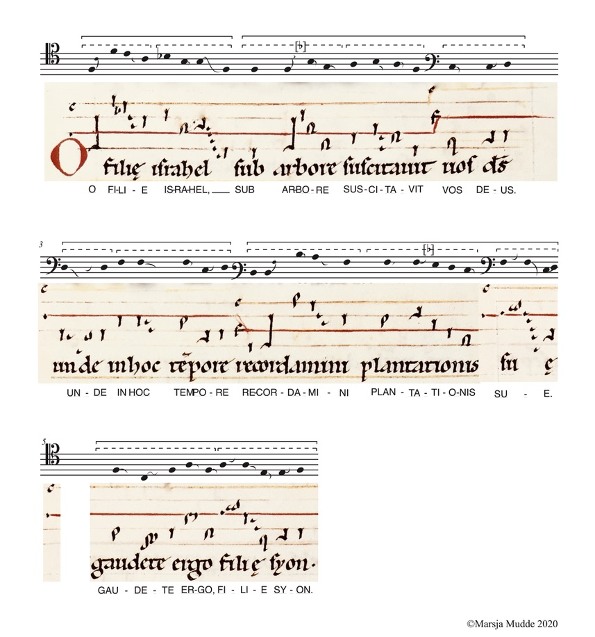

Hildegard von Bingen:
Verdieping in de liederen van Hildegard von Bingen vanuit de Dendermonde Codex en de Riesencodex
Doelgroep:
Gevorderde amateurs en (pre-)professionals
Datum:
datum nog niet bekend
Kosten:
prijs nog niet bekend
Omschrijving:
Onder auspicien van Centrum Cantus Modalis en in samenwerking met Cora Schmeiser ontwikkelt Marsja Mudde Muziek een vijfdaagse workshop rondom het rijke repertoire van de abdis Hildegard von Bingen. Er zal gewerkt worden vanuit reproducties van de originele handschriften. Thema’s in de workshop zijn uitspraak en betekenis, structuur en opbouw, cheironomie versus neumen, bourdons en andere creatieve keuzemogelijkheden en natuurlijk vocale flexibiliteit vanwege de grote ambitus van Hildegards muziek.